Two squadrons: the new pieces
Things you have already decided, drawn so you can see them before they are built. Each picture is the real app with the new part drawn in, outlined in pink and tagged New. Tap a picture to see it full size. Big picture: a desktop. Small picture: your iPhone.
Look at these now: 15 questions
- Q1Who sees other squadrons, and how much, is one row of buttons on the person's Admin → Users row: None · View 149 · Plan 149 · Master admin. Recommended: as drawn. Pictures 1
- Q2On your iPhone the four buttons take two rows. Recommended: leave it, as the Save row under it already does. Pictures 1
- Q3A man who plans 149 shows "· also plans 149" under his name, on both squadrons' lists. Recommended: as drawn. Pictures 2
- Q4The master admin picks which squadrons reach his bell with two buttons at the foot of the bell list, "Show 142 149". Recommended: as drawn. Pictures 3
- Q5A bell line from another squadron carries the grey squadron badge already used on the schedule, after its name. Recommended: as drawn. Pictures 3
- Q6A detachment's empty holiday list offers "Copy 149's 2026 list", for the year on screen. Recommended: here, not as a step when the detachment is made. Pictures 4
- Q7A sign-in waits while the last person's change still saves: "Signing in…" and one line under it. Recommended: as drawn. Pictures 5
- Q8Bell line for a borrowed man made unavailable at home: "On leave, but still on 149's RU formation. Replace him.". Recommended: as drawn. Pictures 6
- Q9Bell line for a borrowed man posted out: "Posted out of 142. Taken off 149's RU formation. Fill his place.". Recommended: as drawn. Pictures 6
- Q10Bell line for a man taken back by his squadron: "142 took him off 149's VL formation. Fill his place.". Recommended: as drawn. Pictures 6
- Q11Bell line for a change saved over: "Your change is gone: 142 saved over it. Check and redo it.", with the badge after the person who saved. Recommended: as drawn. Pictures 6
- Q12A shared place's time zone, greyed for anyone but a master: "Only a master admin can change the time zone: 142 and 149 are both here." Recommended: as drawn. Pictures 7
- Q13A posting the app could not run: an amber line on the man's Admin → Users row, saying it will try again and what to do if it stays. Recommended: as drawn. Pictures 8
- Q14That held posting also rings the bell of the admin who set it. Recommended: no bell line. Pictures 8
- Q15The refusal when demoting an admin would leave 149 with none on a later date: "Kestrel is 149's last admin from Fri 27 Nov, when Osprey moves to 142. Make another admin of 149 first." Recommended: as drawn. Pictures 9
1 · Who sees other squadrons (Q1, Q2)
Each person's row on Admin → Users gets one more line under Sign-in and Role: Other squadrons, with four buttons. One is lit. A greyed button is one the person signed in may not give, and the line under the buttons says why.
- None: the start for everyone.
- View 149: he sees 149's schedule and Logic, read only. Given by 149's admins or a master admin.
- Plan 149: full access to 149, every page: its schedule and publishing, its settings, its people and their sign-ins. For admins only, given by a master admin only.
- Master admin: every squadron, every page. Made by a master admin only. Nobody changes his own row.
Example. Saber, the master admin, opens Hunter's row, taps Plan 149 and Save. Hunter can now plan 149's week. Kestrel, 149's admin, finds Ranger (a 142 member) by searching his list, his row marked "142". He may give View 149, but Plan and Master admin are greyed, and so is everything else on Ranger's row, which stays 142's: Save saves the access only. Hunter, 142's own admin, opens Ranger's row: the whole line is greyed. That last one is my reading of your rulings (access to 149 is given by 149's admins or a master), not something you said outright.
In these pictures the list still shows everyone in the demo: in the finished app Kestrel's list is 149's people, and a 142 man is found by search. Kestrel's top bar still reads "142": the number by TALON does not yet follow the person's squadron.
Q1 Recommended: as drawn. It is the same row of buttons as on "New person", and one line under it carries the meaning or the reason.
Q2 On your iPhone "Master admin" drops to a second row. Recommended: leave it. Buttons keep their size, and the Save, Suspend, Archive row under it already takes two rows on a phone. The other way: Master admin as its own switch below, which fits on one row but splits one ladder into two controls.
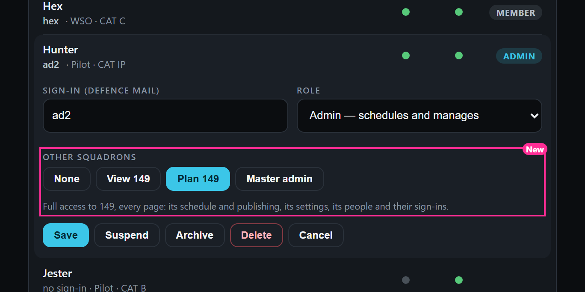
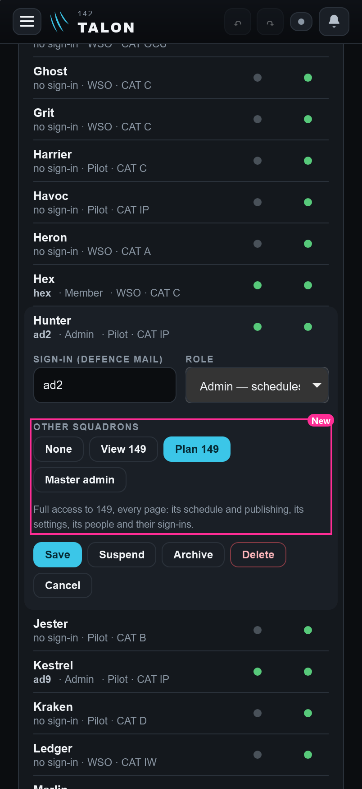
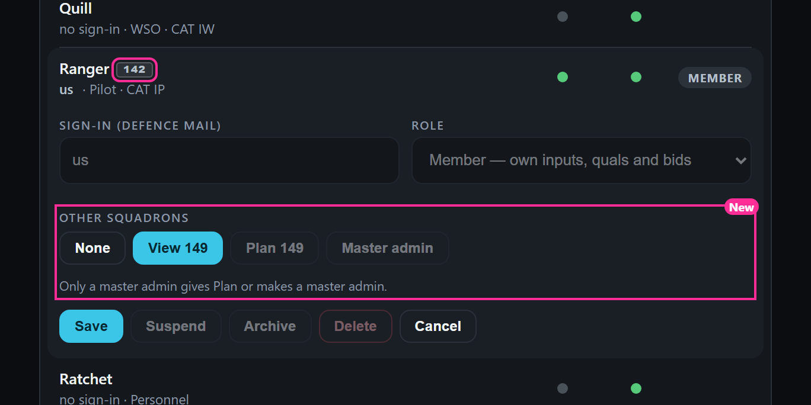
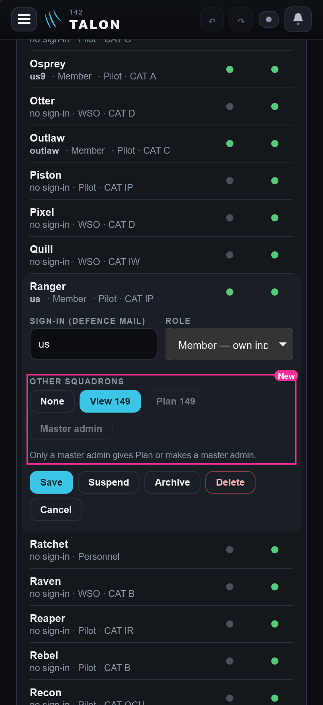
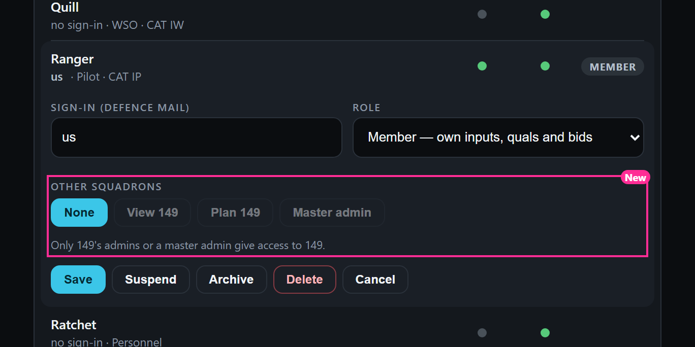
2 · A man who plans 149 (Q3)
Under his name, at the end of the grey line with his sign-in, seat and CAT: · also plans 149 The same on 142's list and on 149's, so both squadrons' admins see who else plans 149.
Example. Saber gives Hunter Plan 149. On Admin → Users Hunter's line reads "ad2 · Pilot · CAT IP · also plans 149", whether Saber, Hunter or Kestrel is looking.
Q3 Recommended: as drawn. A grey pill "PLANS 149" beside his ADMIN pill was tried first: on a desktop it broke onto two lines and pushed the sign-in and roster columns sideways, and on a phone the pills do not show at all.
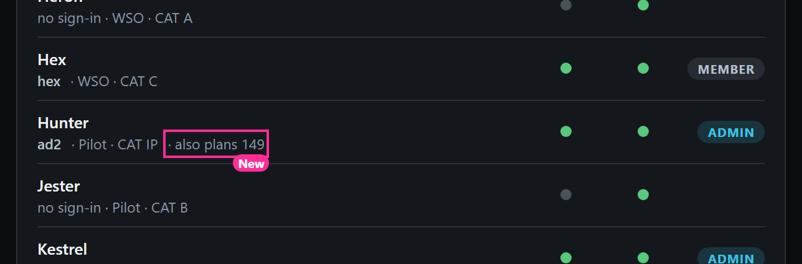
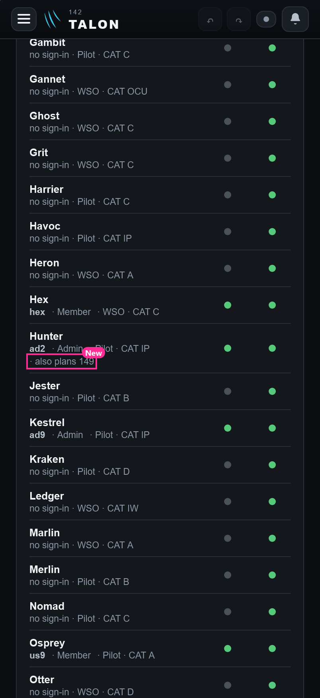
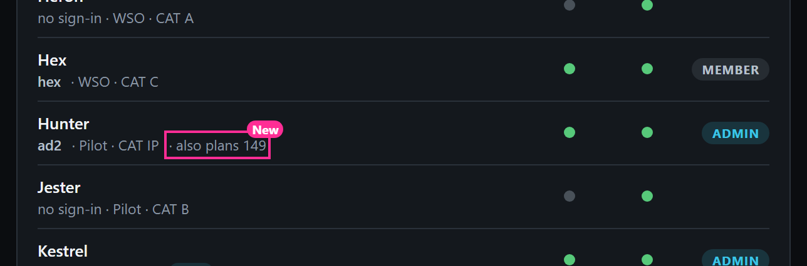
3 · The bell across squadrons (Q4, Q5)
For a master admin, and for an admin who plans another squadron, the bell list gets two buttons at its foot: Show 142 149 A lit button lets that squadron's lines into his bell. A master starts with his own squadron on and the others off. A planner starts with both on, and may switch 149 off himself.
A line from a squadron other than his own carries that squadron's grey badge after its name, the same badge already approved for another squadron's line on the schedule. His own squadron's lines carry none.
Example. Saber opens his bell: only 142's lines (3a). He taps 149: Osprey's training and Falcon's access request appear in among 142's lines, newest first, each marked "149" (3b). He taps 149 again and they go.
A squadron switched off does not light the bell either.
Q4 Recommended: as drawn, the chips in the filter look the app already uses. Nobody else sees them; a person with one squadron sees his bell as today.
Q5 Recommended: as drawn. One grey badge means "another squadron" everywhere in the app.
The lines in these pictures are made up: Saber's bell is empty in the demo.
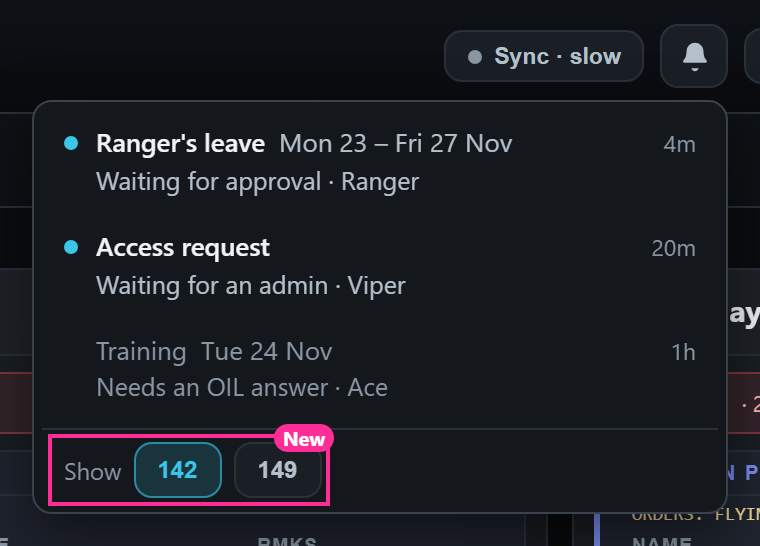
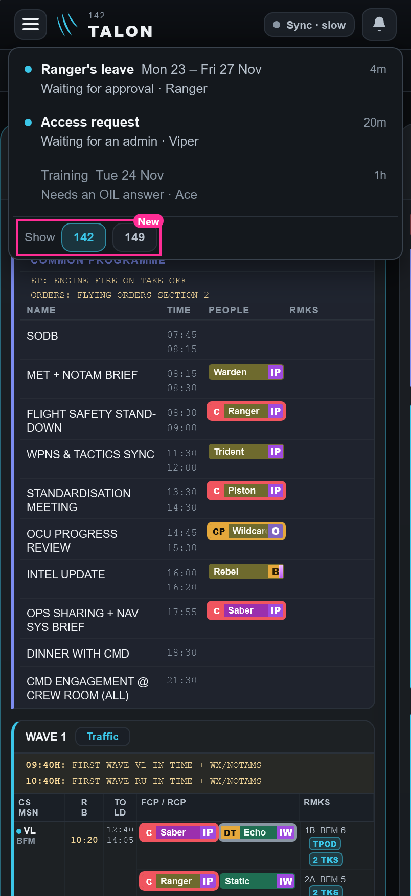
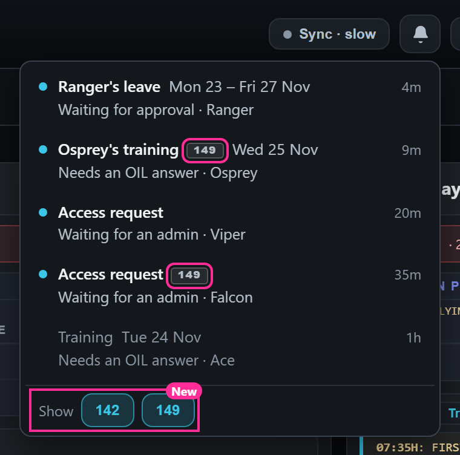

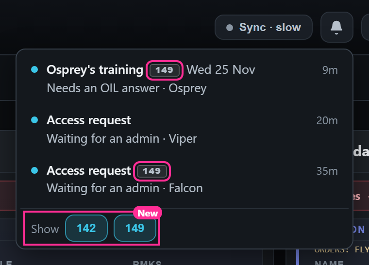
4 · A detachment's own holiday list (Q6)
A detachment keeps its own public-holiday list. While it is empty, its Holidays list (Inputs → ⚙ → Calendar…) says so and offers a copy of its squadron's list:
249 has no holidays of its own yet. [ Copy 149's 2026 list ]
The copy is a start only. After it, 249's list and 149's are changed apart, never kept in step. The button shows while 249 has no holidays in the year on screen, and goes once that year has one. It copies the public holidays only: Off days stay 149's, as a detachment uses its squadron's.
Example. Kestrel makes the detachment 249 for an exercise overseas, opens its Calendar, taps Copy 149's 2026 list, then deletes the two 149 holidays that do not apply where 249 is, and adds the local one.
Q6 Recommended: offered here, on the empty list, for the year on screen, rather than as a step when the detachment is made. It is always there when needed, and making a detachment stays short. The detachment itself is not built yet, so its name is put into the real Calendar window's title for the picture.
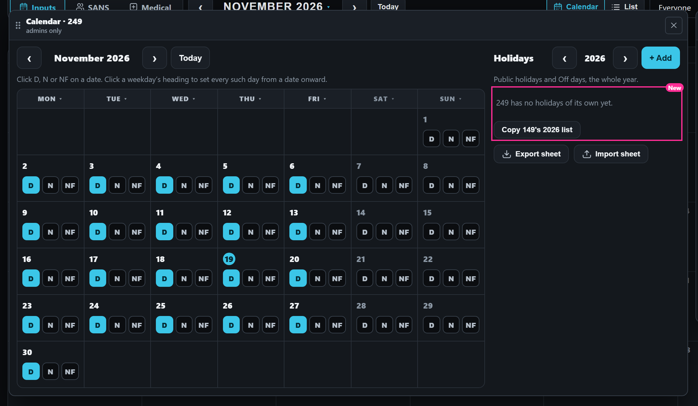
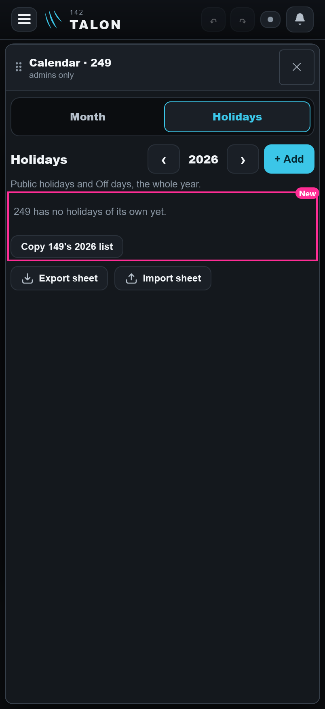
5 · A sign-in that waits for a save (Q7)
On a shared computer, Saber signs out while his last change is still saving. Kestrel signs in on the same page at once. The app waits for Saber's change to save before signing Kestrel in, so it is never saved under Kestrel's name or lost.
[ Signing in… ] Waiting for the last change on this page to save.
When the save lands, Kestrel is signed in by himself. If it fails, the "Not saved" band already built shows on this screen, with its Retry, and Kestrel stays on this screen until Retry saves it.
Q7 Recommended: as drawn. The line does not name Saber, so the next person is not shown who was here before.
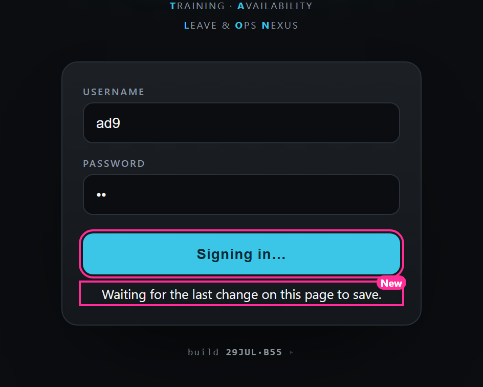
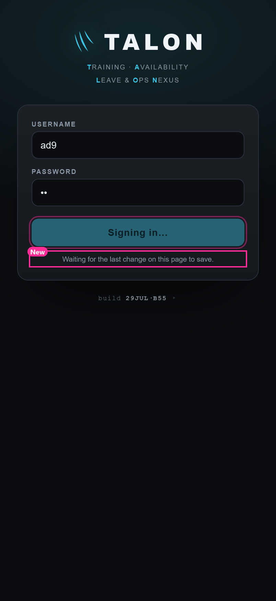
6 · Four bell lines that cross squadrons (Q8 to Q11)
The first three go to 149's schedulers. The fourth goes only to the person whose change was replaced, in either squadron. Here Ranger of 142 is borrowed onto 149's RU and VL, and Kestrel is 149's scheduler. The grey "142" badge marks 142's people: Ranger on the first three lines, Hunter on the fourth. RU is 149's own line, so it carries none.
- Unavailable at home (D2213): Ranger 142 · Wed 25 Nov · On leave, but still on 149's RU formation. Replace him. · Hunter A tap opens 149's Wed 25 Nov on the Scheduler Board with Ranger's line ringed.
- Posted out, archived or deleted: Ranger 142 · Wed 25, Thu 26 Nov · Posted out of 142. Taken off 149's RU formation. Fill his place. · Hunter ("Archived by 142." or "Deleted by 142." in its place). A tap opens the first of those days. "Off your RU" because archiving or deleting a man already takes him off every day from that date, and a published day he was on reads "1 pending".
- Taken back by his squadron: Ranger 142 · Thu 26 Nov · 142 took him off 149's VL formation. Fill his place. · Hunter A tap opens that day.
- Two saves at once: RU · Wed 25 Nov · Your change is gone: 142 saved over it. Check and redo it. · Hunter 142 Only the person whose change was replaced is told. A tap opens the changes window on RU's line, where both changes show.
Q8 to Q11, one for each line above, top to bottom. Recommended: each as drawn. Each line says what happened at 142 first, then what it does to 149's plan.
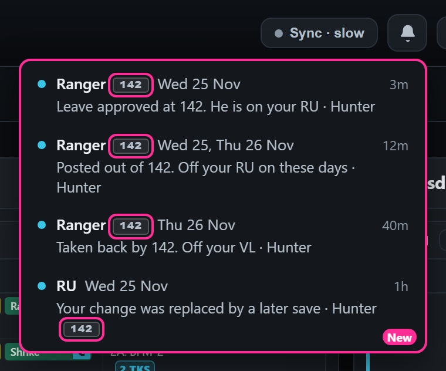
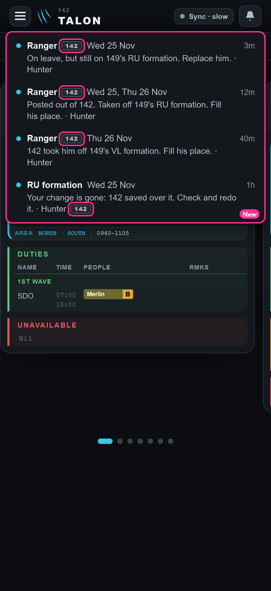
7 · A shared place's time zone (Q12)
On Admin → Squadrons, where 142 and 149 both sit at Home base, the place's time zone is greyed for anyone but a master admin, with one line saying why:
Only a master admin can change the time zone: 142 and 149 are both here.
Example. Hunter opens Home base: he cannot change its time zone, since that would move every time on 149's schedule too. Saber sees it as an ordinary choice. A place only 142 sits on stays Hunter's to set.
Q12 Recommended: as drawn. The Squadrons page is the one drawn in an earlier round, not built yet; it is made here from Admin → Users' own parts. Its tile gets a map pin of its own, so it does not share the Users icon.
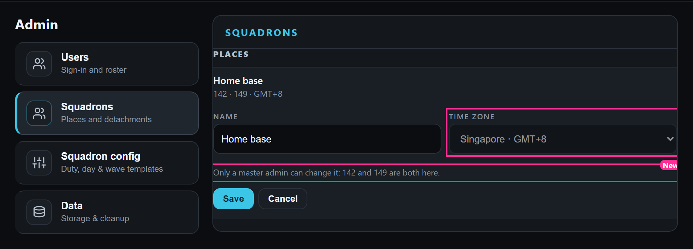
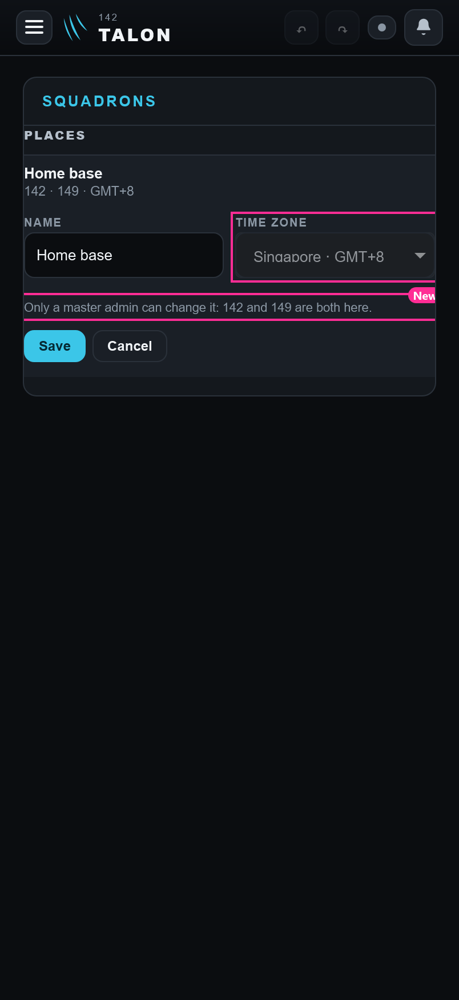
8 · A posting that could not run (Q13, Q14)
Rarely, a posting out comes due and the app cannot run it for a reason nobody foresaw. Today it simply waits and says nothing. Drawn: one amber line on the man's Admin → Users row, where a posting held for the last-admin reason already says why it waits.
This posting could not run. It will try again when the app is next opened. If this stays, report it with “Report a problem” on the Help page.
Example. Outlaw's posting out was due Fri 20 Nov. Saber opens Admin → Users and sees the amber line under Outlaw's row.
Q13 Recommended: as drawn. The last sentence is how the app already tells a person what to do when it cannot read a saved week.
Q14 Recommended: no bell line, since the app tries again by itself and it is very rare. If you want the admin who set the posting told by his bell as well, that line is drawn for you first.

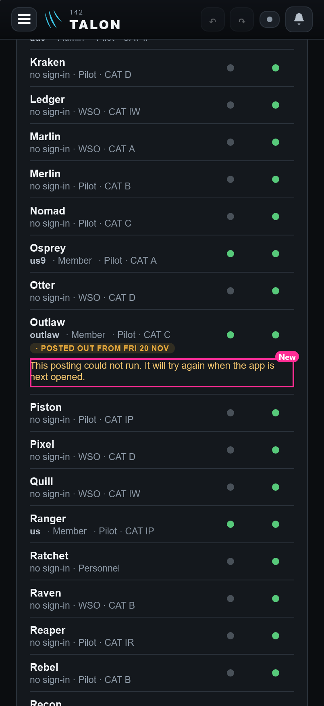
9 · The last admin, on a later date (Q15)
149 always keeps an admin of its own. When a step today would leave 149 without one only from a later date, the refusal now says "You are not allowed to do that", which is wrong: Saber is allowed, the step would just leave 149 short of an admin. (Read from the app's code: no screen yet saves a move between squadrons, so this cannot be shown live.)
Kestrel is 149's last admin from Fri 27 Nov, when Osprey moves to 142. Make another admin of 149 first.
Example. Osprey, 149's second admin, is already set to move to 142 on Fri 27 Nov. Today Saber opens Kestrel's row, makes him a member and presses Save. Nothing is saved, and the note above shows.
Q15 Recommended: as drawn. It keeps the shape of the words already built for today's case (9a, real) and adds the date and the reason.
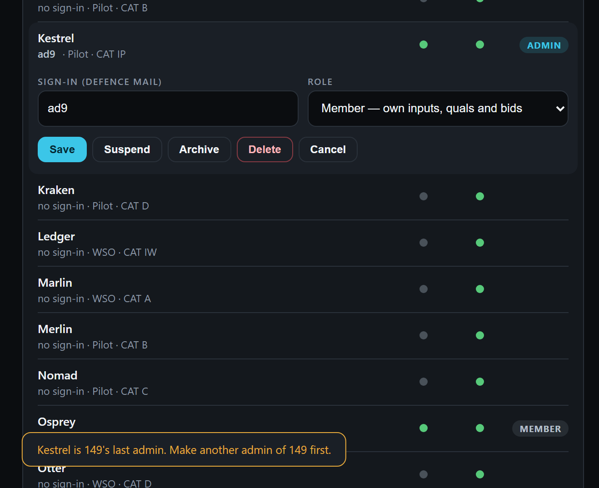
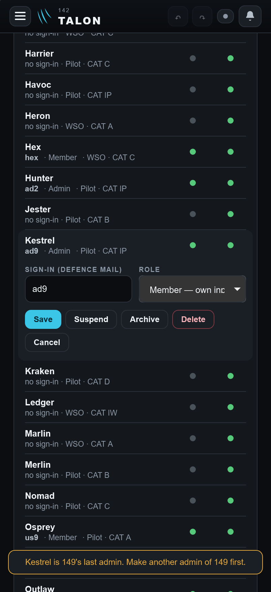
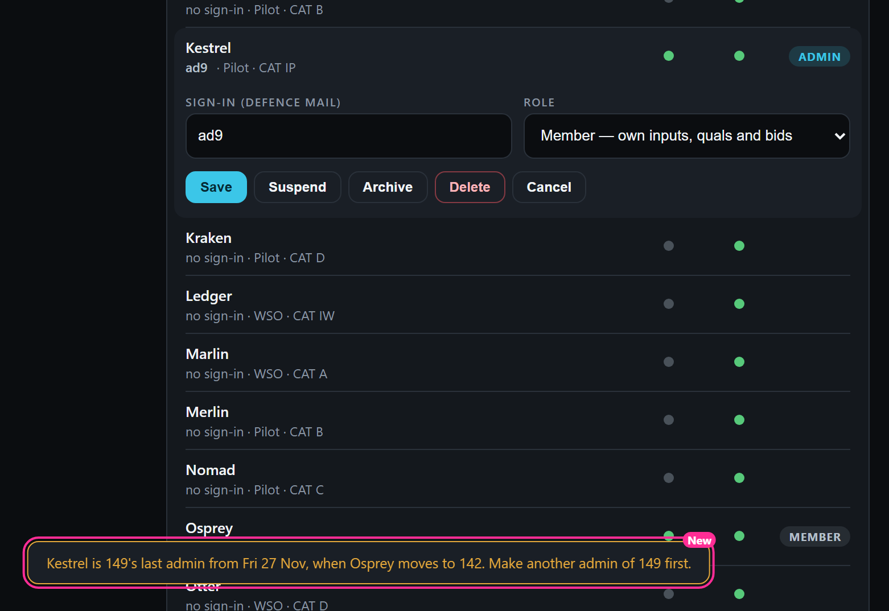

All names are the demo's. Every picture except 9a is the real app with the new part drawn in; 9a is the app exactly as it is.